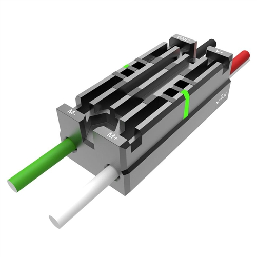

Speed (Motor) Controllers
Speed controllers are one of the most common components on the robot, and one of the ones you will actually be programming. For a quick overview, check out this powerpoint:
Speed controllers come in many flavors, but the most common (at least for Team 2035) these days are Victor SPs (shown) and Talon SRXs. They look very similar, but it is important not to confuse them. Talons are a lot more expensive, but they have much more capabilities. However, Victors are perfectly okay for basic speed controller functionality.
So this begs the question: what do speed controllers even do? To be frank, they control the speed of a motor. More specifically, they allow a motor to be programmable, as they would not be otherwise. It would be pretty difficult to program a raw motor (it probably would include some sort of binary or something), but with a speed controller, you can set an exact decimal speed from -1 to 1. The way it does this is pretty simple, using what is called PWM control.
PWM stands for Pulse Width Modulation. This means that instead of sending one constant stream of current to the motor, the controller pulses the electricity in order to create an illusion of the motor moving consistently at a slower pace. This is why speed controllers are connected to the roboRIO through PWM cables that allow the programming data to be sent to the controller.
We will go over how to program a speed controller in depth later on, but first it is important to try and understand how the component works.